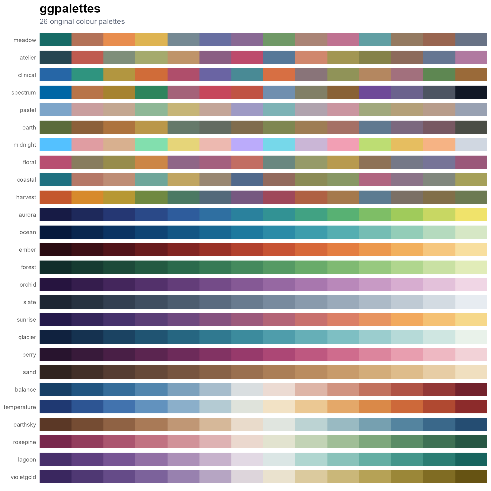

ggpalettes provides 26 original colour palettes and native colour/fill scales for ggplot2. Its compact pal_*() and scale_*() interface will feel familiar to users of scientific palette packages such as ggsci, while the catalogue focuses on balanced, publication-ready colours for the ggcraft ecosystem.

Installation
# install.packages("pak")
pak::pak("YaoxiangLi/ggpalettes")Usage
library(ggpalettes)
library(ggplot2)
gg_palette_names()
gg_palette_info(type = "sequential")
# Palette functions: pal_name()(n)
pal_meadow()(6)
pal_aurora()(12)
ggplot(iris, aes(Sepal.Length, Sepal.Width, colour = Species)) +
geom_point(size = 3) +
scale_colour_clinical() +
theme_minimal()
ggplot(faithfuld, aes(waiting, eruptions, fill = density)) +
geom_raster() +
scale_fill_ember() +
theme_minimal()Every palette has pal_*(), scale_color_*(), scale_colour_*(), and scale_fill_*() forms. Generic interfaces are also available:
scale_colour_ggpalette("atelier")
scale_fill_ggpalette("balance")
scale_fill_ggpalette("ocean", binned = TRUE)Categorical palettes default to discrete scales. Sequential and diverging palettes default to continuous scales, so most plots need no scale-mode argument.
Catalogue
- Categorical:
meadow,atelier,clinical,spectrum,pastel,earth,midnight,floral,coastal, andharvest. - Sequential:
aurora,ocean,ember,forest,orchid,slate,sunrise,glacier,berry, andsand. - Diverging:
balance,temperature,earthsky,rosepine,lagoon, andvioletgold.
Use gg_palette_plot() to draw all or part of the catalogue. Use gg_palette_check() to screen CIE Lab separation and contrast against a selected background.
gg_palette_plot(type = "diverging", n = 9)
gg_palette_check("meadow", background = "white")